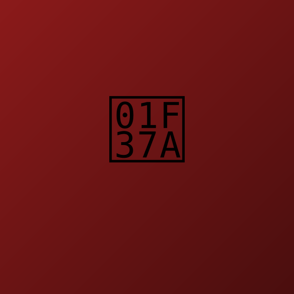
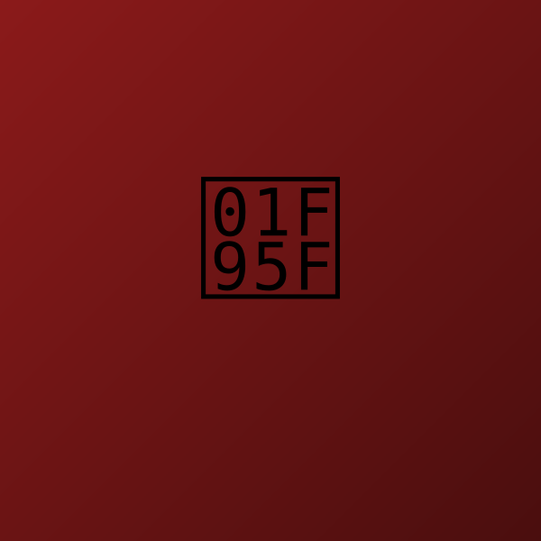

El Banderín
Un siglo de historias, un barrio, infinitos banderines.
Historia
Fundado el 15 de noviembre de 1923, El Banderín comenzó siendo "El Asturiano, Provisiones y Fiambrería", un almacén de ramos generales fundado por Don Justo Riesco, inmigrante español de Asturias.
En las décadas del 60 y 70, su hijo Don Mario, fanático de River Plate, comenzó a colgar banderines de fútbol en el local. Lo que empezó como una decoración personal se convirtió en una tradición que transformó el lugar por completo.
Para la década de 1970, la cantidad de banderines era tal que el nombre cambió: nació "El Banderín".
500+ Banderines — Un Museo Vivo
Hoy el bar alberga más de 500 banderines de clubes de fútbol de todo el mundo: desde los grandes equipos argentinos hasta clubes lejanos de Europa, Asia y África. Es un auténtico museo viviente del fútbol mundial.
Bar Notable de Buenos Aires
Declarado "Bar Notable" por el Gobierno de la Ciudad de Buenos Aires, un título que protege y celebra los bares más emblemáticos de la ciudad por su historia, arquitectura y valor cultural.
Actualidad
Desde 2019 está a cargo de Luis Sarni, quien mantiene viva la esencia del bodegón porteño. Los lunes se reúnen periodistas deportivos de Radio Belgrano para debatir fútbol. Los sábados hay música en vivo.
Fundación como "El Asturiano"
Nace "El Banderín"
Banderines de todo el mundo
Declarado por el GCBA
Galería
El Banderín en imágenes


Reservá tu mesa
Escribinos por WhatsApp y te confirmamos al toque
Cómo llegar
Dirección
Guardia Vieja 3601, Almagro, CABA
Subte Malabia — Línea B
Horarios
Lunes a domingo: 11:00 a 1:00
Contacto
Visitas destacadas
Una constelación de figuras que han pasado por estas mesas.